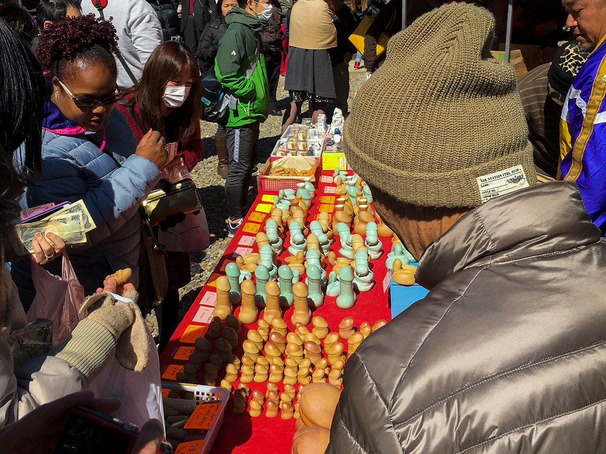

Japan har fået en skygge på skuldrene her i Vesten: landet, hvor al den mærkelige teknologi kommer fra, kendt for tegneserier, animation og "mærkelig kultur". Det gør, at mange forventer et kulturchok i Japan, allerede inden de er landet.
Efter flere år i landet er mit svar, at ja, der er mærkelige øjeblikke, men det hele kommer ned til perspektiv. Alle lande er "mærkelige" set udefra, og både traditioner og mad, som vi danskere finder underlige, har en logik for dem, der er vokset op med dem.
Hvad er kulturchok, og hvordan ser det ud i Japan?
Kulturchok er den forvirring, træthed eller irritation, man kan mærke, når hverdagens regler, sprog og vaner er anderledes end dem, man kender. Begrebet stammer fra antropologen Kalervo Oberg, der i 1950'erne beskrev, at de fleste, der kommer til en ny kultur, gennemgår nogenlunde de samme faser: først en forelskelse, hvor alt er spændende, derefter frustration, når forskellene bliver til hverdag, så en tilpasning og til sidst accept. Det rammer ikke kun rejsende: mange oplever også omvendt kulturchok, når de kommer hjem igen.
I Japan opstår kulturchok sjældent af de store ting. Det er de små: at man tager skoene af ved indgangen, at skiltene er skrevet med tegn, man ikke kan læse, at tavsheden i toget er en uskreven regel, og at mange mindre steder stadig kun tager kontanter. Og bagved ligger ofte en logik, der giver mening, når man kender den. Det vender jeg tilbage til, men først et eksempel, der tydeligt ser mærkeligt ud udefra.
Når en penis bliver båret rundt i byen
Hver 15. marts holder Tagata-helligdommen i Komaki, lidt nord for Nagoya, Hōnen Matsuri (豊年祭): en fest for frugtbarhed og en god høst. Forløbet kan lyde som en joke, men det er et gammelt shintoritual. Her sælges figurer og souvenirs i penisform fra boder rundt om helligdommen, og gæsterne er alt fra lokale familier til turister.

Festivalens hovedperson er en stor penis af cypres, der skæres på ny hvert år. Den er omkring to meter lang og vejer omkring 280 kg, og den bæres i optog gennem byen på en hellig bæreplatform, en mikoshi (神輿). Bærerne er traditionelt mænd i en "uheldig alder", yakudoshi (厄年), som på den måde søger held for det kommende år.
Set udefra er det mærkeligt. Set indefra er det en høsttradition med samme grundtanke som mange af vores egne: at bede om, at det nye år må blive godt.
Billetter til koncerter fordeles ved lodtrækning
Mange større koncerter i Japan sælges ikke efter "først til mølle", men ved lodtrækning, chūsen (抽選). Man tilmelder sig, ofte via et fanklub-medlemskab, og får først bagefter at vide, om man har vundet. Det betyder, at du aldrig kan være sikker på en billet, uanset hvor tidligt du er oppe.
Formålet er typisk at holde videresalg nede og give flere en fair chance, men for en udlænding, der planlægger en rejse omkring en koncert, er det svært at gennemskue. Hele forløbet, fra fanklub og lodtrækning til billetter med dit navn på, kan du læse i Koncerter i Japan.
Sproget har tre lag
Japansk skifter form efter, hvem du taler med, og der er tre lag:
- Casual sprog (tameguchi, タメ口): det afslappede talesprog blandt venner, familie og jævnaldrende.
- Høflig form (teineigo, 丁寧語): den almindelige høflighed over for fremmede i hverdagen, med endelser som desu (です) og masu (ます).
- Keigo (敬語): den ærbødige og ydmyge form, man bruger over for kunder og overordnede.
Selv japanere øver sig i keigo, når de begynder på deres første job.
Det gør mange nervøse for at sige noget forkert, og det kan tage modet fra sproglæringen og nysgerrigheden. Når spørgsmål skal stilles på en bestemt måde for ikke at blive misforstået, er det let at lade være med at spørge. Den gode nyhed er, at man ikke bliver dømt hårdt som udlænding: den høflige form er et sikkert udgangspunkt, og forsøget bliver næsten altid værdsat.
Og vil du se, hvor langt høfligheden kan strækkes, så læs om Kyoto, hvor et kompliment kan betyde, at du skal gå.
Kulturchok i Japan handler om perspektiv
Er det hele bare et gigantisk kulturchok, hvor det kan føles som en anden verden? Prøv at vende det om. Japanere synes måske også, at vores smørrebrød er lige tørt nok. At man får penge for at studere, virker på hovedet (især SU'en), og resten af uddannelsessystemet er ikke meget mindre forvirrende. Og hvad mener vi egentlig med, at man som ugift 25-årig bliver bundet til en lygtepæl og overhældt med kanel, til man ikke kan se ud af øjnene?
Hvis der er én ting, mine år i Japan har lært mig, er det, at kulturchok handler om perspektiv. I Danmark drikker vi ofte det, alle de andre drikker. I Japan går man ud og drikker med chefen efter arbejde, nomikai (飲み会). Vi er ikke så forskellige, men vi har forskellige ideer om, hvordan hverdagen hænger sammen.
At føle sig velkommen, selv om man ikke passer ind
Det, japanerne er bedre til end de fleste, er at få gæster til at føle sig velkomne. Ordet for det er omotenashi (おもてなし): gæstfrihed, hvor man tænker på behovet, før gæsten har nået at bede om noget.
Hvis folk kigger på dig i toget, handler det sjældent om, at du ser mærkelig ud. Over 97 % af Japans befolkning er japanere, mens omkring 83 % af danskerne har dansk oprindelse. Især uden for de store turistbyer ser man ikke mange udlændinge, så nysgerrigheden er ægte og sjældent ondskabsfuld. De er lige så nysgerrige på os, som vi er på dem.
Og det er da netop ved de "mærkelige" ting, at man begynder at forstå et land, som når man for første gang står i et onsen (温泉) og opdager, at der findes regler, ingen fortæller dig, eller når man overnatter i en ryokan (旅館).
Ofte stillede spørgsmål om kulturchok i Japan
Hvorfor virker Japan så anderledes?
Fordi hverdagens vaner, sprog og uskrevne regler er bygget op om en anden logik end vores. Det, der virker usædvanligt for os, har som regel en fast mening for dem, der er vokset op med det, og omvendt undrer japanere sig over mange danske vaner.
Hvorfor kigger japanere på udlændinge?
Oftest af nysgerrighed. Uden for de store turistbyer ser man ikke mange udlændinge, og over 97 % af befolkningen er japanere. Blikket er sjældent negativt ment.
Skal jeg kunne japansk for at rejse til Japan?
Ikke for at få en god rejse, men mange små steder, blandt andet mange ryokan (旅館), tager kun imod reservationer på japansk. Det klarer jeg i en Rejseplan + booking. Ved du selv lidt japansk, er den høflige form med desu (です) og masu (ます) et sikkert udgangspunkt.
Hvordan får man billetter til koncerter i Japan?
Ofte via lodtrækning, chūsen (抽選), hvor man tilmelder sig i en periode og får svar bagefter. Mange arrangører kræver fanklub-medlemskab, og reglerne varierer, så tjek altid arrangørens egen side. Læs mere i Koncerter i Japan.
Kan man undgå kulturchok i Japan?
Ikke helt, og det er heller ikke målet. Men det bliver lettere, hvis man kender de uskrevne regler på forhånd, for eksempel reglerne for onsen (温泉), og har fået planlagt turen, så man ikke skal gætte undervejs.
Kulturchok er nemmere med en guide
De fleste rejser til Japan uden at kende de uskrevne regler, og så er det nemt at føle sig forkert. Med en plan bygget af én, der har boet i landet, og booking af steder, der kun tager imod reservationer på japansk, er det lettere at nyde forskellene i stedet for at snuble over dem. Det hjælper jeg med i en Rejseplan + booking.
Nogle spørgsmål til kulturchok i Japan?
Udfyld følgende, så vender jeg tilbage hurtigst muligt.
Tak! Jeg har modtaget din besked og vender tilbage hurtigst muligt.
Læs også
Kilder
- Japan: National maps and statistics, University of Michigan
- Indvandrere og efterkommere, Danmarks Statistik
- Tagata-helligdommen (Tagata Jinja)
Følg Kantan for mere om Japan